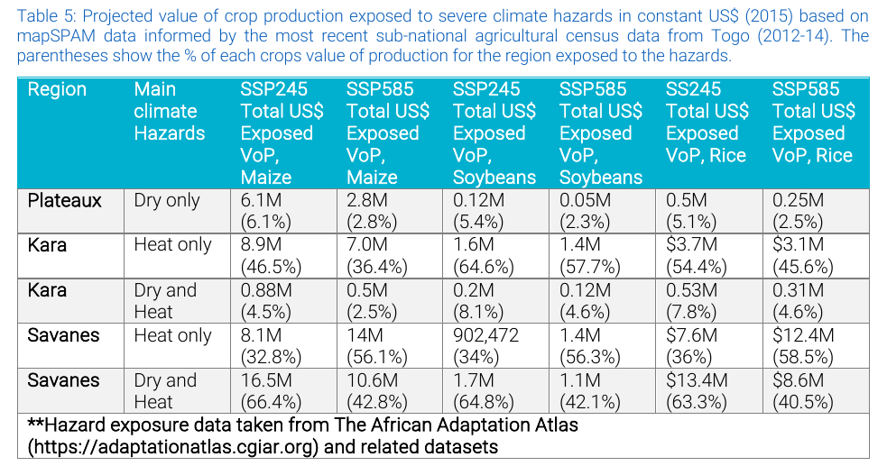

GCF Preparation Facility · Climate Rationale v2 · Data review
GCF Preparation Facility — data, skills & notebook review
A structured review of the data behind the Atlas Climate Rationale v2 notebook and the CGIAR Climate Data Hub’s plan to serve Green Climate Fund proposal writers — organised around the nine notebook sections in the GCF data-requirements memo, and mapped to the GCF Concept Note (v3.1) sections each one feeds.
Who this is for
The use-case task group (champion, CACC1; coordinator, CACC2; plus Brayden Youngberg and Majambo Gamoyo); the CDH technical team prioritising which datasets to bring into the Hub; and GCF proposal writers as the end users.
The goal
Compress the climate-rationale step of a GCF Concept Note / Funding Proposal from weeks to hours, while keeping methodological attribution transparent. The Togo SAT rationale (April 2025) is one illustrative example of the kind of output — a suggestion, not a prescribed standard.
How it’s organised
Three tabs: Data (this one — the nine notebook sections and their datasets), Skills (the CDH LLM-skills library and a proposed GCF skill), and Notebook (the multilateral-climate-funds pipeline idea).
Decisions it informs
Which datasets the Hub catalogues first; which memo sections are in scope for v1 (August target); what to build as a reusable skill; and how to turn the climate-funds dataset into a notebook.
climateRationale notebook and its decision log. Dataset facts come from each provider’s official page, checked live on 2026-07-07 and re-checked adversarially — logged in the evidence log. Internal meeting transcripts, chats and emails are not reproduced — only short excerpts and summaries of decisions. Anything unconfirmed is marked pending, never guessed.The nine data themes at a glance
Each row is a theme of a GCF/IFI proposal and the datasets that serve it. The same data can be delivered two ways — through an Atlas-style geoselector notebook or an LLM skill that emits citable structured outputs — so this review is about the datasets, not one delivery surface. Every theme must be queryable at country + admin0/1/2 level. Click a theme to jump to its datasets.
Table 1 — Nine data themes for GCF/IFI proposal development. “Serves” = the GCF Concept Note (CN) / Funding Proposal (FP) sections each theme supports (key in the fold below the table). Status: IN CR already in the Climate Rationale notebook · PARTIAL partly present, needs additions · NEW not yet built · DEPRIORITISED in the memo but since parked. “Present” = what the live notebook does today; “Recommended” = target datasets.
| # | Notebook section | Serves (GCF proposal sections) | Status | Feasibility |
|---|---|---|---|---|
| 1 | Climate trends & projections | CN C.1 · FP B.1 | IN CR | 1 |
| 2 | Extreme events | CN C.1 · FP B.1, D.1 | IN CR | 1 |
| 3 | Crop & livestock hazard exposure | CN C.1, C.2 · FP B.1, D.1 | PARTIAL | 2–3 |
| 4 | Vulnerability & socioeconomic context | CN Exec Summary · FP D.4 | PARTIAL | 1–2 |
| 5 | NDC & NAP alignment | CN A.16 · FP D.5 | DEPRIORITISED | 3 |
| 6 | Impact potential & beneficiaries | CN A.6–A.7 · FP D.1, E.3 | NEW | 2–4 |
| 7 | Theory of change & GCF portfolio | FP B.2, D.2 | NEW | 2–3 |
| 8 | Safeguards & gender screening | CN C.4 · FP G.1–G.2 | NEW | 2 |
| 9 | Financial context & justification | CN D.1–D.4 · FP B.5, C.1 | NEW | 2 |
Feasibility 1 = easy (public, mostly integration) to 5 = hard (per-country acquisition, NLP, or new modelling). Memo priority actions: (a) extend Sections 3–4; (b) build Section 7 (GCF portfolio); (c) build the remaining NEW sections on public global datasets; (d) standardise all outputs to a common schema.
Key — what the “CN” / “FP” section codes mean
GCF applications come in two stages, each a standard template. The codes are section references within them:
- CN — Concept Note (template v3.1): the short first-stage pitch. Its sections include Exec Summary (the problem + solution), C.1 Climate change context, C.2 Proposed project/programme, C.4 Indicative safeguards profile, A.6–A.7 Estimated mitigation / adaptation outcomes, A.16 Alignment with country NDCs & NAPs, and D.1–D.4 Financing information & justification.
- FP — Funding Proposal: the full second-stage document that follows a successful Concept Note. Its section letters cover the same themes in more depth — broadly B climate rationale & theory of change, D expected performance / financing, E logic & results, G safeguards annexes (exact subsection titles per the GCF Funding Proposal template).
So e.g. “CN C.1 · FP B.1” means the section supplies the climate-context narrative needed for Concept Note section C.1 and Funding Proposal section B.1. Codes trace to the memo’s section-to-GCF mapping.
), or open the thread on GitHub (click a comment's timestamp) and drag the image into GitHub's own editor there, or use the 💬 Feedback button (its form takes file uploads). Handy for suggesting an output format or flagging an issue.💬 Comment / discuss “Sections at a glance”
1 · Climate trends & projections IN CR
Serves CN C.1 · FP B.1 — historical timeseries and future projections, all at administrative level.
Memo requirement (verbatim)
Historical timeseries (TAVG, PTOT, by season); future projections (SSP1-2.6 through SSP5-8.5, periods 2021–2040 to 2080–2100); anomalies; warming stripes. All at administrative level.GCF Data Notebook Memo, Section 1
- Historical
- CHIRPS v3 (PTOT) + CHIRTS-ERA5 (TAVG/TMAX/TMIN) + SPEI-03/12; 0.05°; adm0 + adm1; baseline 1991–2020 (WMO); anomaly toggle
- Future
- NEX-GDDP-CMIP6, 18-GCM ensemble; adm1 only; 4 periods 2021–2100; 4 SSPs (1-2.6 → 5-8.5); baseline 1995–2014; 17–83% inter-model range
- Coverage
- served products are region = Africa (both obs & projections) — not global; the pipeline could extend but hasn't published beyond Africa
Verified against the Atlas CR data audit, 2026-07-09. Two trend/variability products (Theil-Sen slope; interannual variability) are produced but not yet wired into the production notebook.
- Sources
- NEX-GDDP-CMIP6 / CORDEX; ERA5; CHIRPS / CHIRTS
- Scenarios
- SSP1-2.6 → SSP5-8.5; periods 2021–2040 to 2080–2100
- Outputs
- anomalies + warming stripes, admin-level, with pre-computed sentence fragments
Verdict. Core capability exists and is the notebook’s strongest section. Gap is breadth of SSP/period coverage in the exposed outputs, not the underlying data.
💬 Comment / discuss “Climate trends & projections”
2 · Extreme events IN CR
Serves CN C.1 · FP B.1, D.1 — unusual / extreme temperature and precipitation events.
Memo requirement (verbatim)
Z-score classification of unusual/extreme temperature and precipitation events; historical vs. projected frequency by scenario. All at administrative level.GCF Data Notebook Memo, Section 2
- Method
- Z-score categorisation; tails-aware (PTOT both tails, others high-only); per-hazard threshold rows
- Derivation
- computed in-notebook (client-side) from the Section 1 projections parquet; z-score vs 1995–2014; ensemble-mean only — no per-GCM classification, so tail models are masked (audit 2026-07-09)
- Source
- derived from Section 1
- Add
- historical vs projected frequency by scenario; per-GCM classification for uncertainty bands (open pipeline item)
Verdict. Matches the Togo SAT z-score approach (Fig. 5 rainfall anomalies). Note the Togo document’s own Z=1 / Z=2 labelling is internally inconsistent with its annex — resolve the threshold labels when this feeds a template.
💬 Comment / discuss “Extreme events”
3 · Crop & livestock hazard exposure PARTIAL
Serves CN C.1, C.2 · FP B.1, D.1 — production value exposed to compound hazards, valued in USD — in the style of the Togo SAT Table 5 example.
Memo requirement (verbatim)
Production value by crop (MapSpam); crop and livestock hazard exposure (drought, heat, waterlogging combos) valued in USD by scenario. Add if possible: fisheries/aquaculture exposure, water-demand stress on irrigated systems.GCF Data Notebook Memo, Section 3
- MapSPAM 2020 · crop value
- FAOSTAT · production, prices
- GLW4 · livestock numbers
- FAO GLEAM · emission intensity
- WRI Aqueduct · water stress
- FAO FishStat · aquaculture value
- AQUASTAT GMIA v5 · irrigation extent
- Sea Around Us · marine catch value
Present in the notebook (verified against the Atlas CR data audit, 2026-07-09): MapSPAM 2020 v1r2 production value × GLW4-2020 livestock (a combined crop + livestock exposure parquet — livestock is present, not partial) × the hazard indices; Ecocrop-default thresholds. Scope: Sub-Saharan Africa only, adm1 only (the champion's "biggest limitation"); fisheries / aquaculture absent. Only the severe severity tier is live (moderate / extreme pending). Valued in nominal 2021 USD, not constant dollars.
source nex-gddp-cmip6 vs atlas_cmip6; variable vop_nominal-usd21 vs vop_intld15/usd15; model ENSEMBLEmean vs ENSEMBLE/historic; interaction filename). The constant-dollar currency fix prepped in hazards_prototype ships to keys the live notebook doesn't read. Not yet S3-verified — needs an aws s3 ls on both prefixes to confirm it's a real gap vs a stale notebook path.Theme 3 datasets — crop & livestock hazard exposure. Source: HAVE already in CDH/Atlas · CACC1 Cesare's memo · CACC2 added by this review. CDH integration route = how the Hub would connect it: mirror-host (open data), federate (live API), or derive-then-host (compute a product — for bulk-only or non-commercial sources).
| Dataset | Source | What it is | Format & resolution | → admin | IP / licence | CDH integration route |
|---|---|---|---|---|---|---|
| MapSPAM 2020 | HAVE | Crop physical area / production / value by crop & system | GeoTIFF raster, ~10 km | zonal sum | open — CC BY 4.0 | already held (in CR) |
| FAOSTAT | HAVE | National production, area, producer prices | tabular, ISO3 × year | ISO3 join | NC — CC BY-NC-SA 3.0 IGO | already held |
| FAO GLEAM v3 | CACC1 P3 | Livestock emission intensity (+ numbers/production) — a supporting/weighting layer, not USD value or exposure | raster ~10 km + WMS/WMTS | zonal mean/sum | restricted-use — FAO application + user agreement; NC, no redistribution | Federate WMS/WMTS only (data.apps.fao.org); no mirror; a derived parquet is licence-blocked pending FAO permission |
| WRI Aqueduct 4.0 | CACC1 P1 | Baseline water stress (bws) + water depletion (bwd) — the water-demand-stress signal for irrigated systems | vector polygons (basin+province+aquifer composite) + CSV | attribute join on gid_0/1; overlay onto irrigated area | open — CC BY 4.0 | Mirror-host raw ZIP, or derive an admin-joined bws/bwd parquet |
| FAO FishStat — aquaculture value | CACC1 P2 | Aquaculture value of production (1000 USD), 1984–2021, by country (memo's "add fisheries/aquaculture") | tabular CSV, ISO3 | ISO3 join → admin0 (national only) | NC — CC BY-NC-SA 3.0 IGO | Derive-then-host parquet (normalise to ISO3+year+value) |
| FAO GLW4 | HAVE | Gridded livestock density (head/km²) by species, 2020 — open animal-numbers layer | GeoTIFF raster, ~10 km | zonal sum → head/admin; × FAOSTAT price → value exposed | open — CC BY 4.0 | already held — gives open gridded animal numbers (so GLEAM isn't needed for numbers) |
| AQUASTAT GMIA v5 | CACC2 P1 | % area equipped for irrigation — locates irrigated systems under water stress | raster 5 arc-min + shapefile | zonal sum irrigated area; multiply by Aqueduct bws | open (cite-as, Siebert et al. 2013) | Mirror-host raw; pairs directly with Aqueduct |
| Sea Around Us | CACC2 P3 | Reconstructed marine catch tonnage + landed value (sub-national / EEZ detail FishStat lacks) | 0.5° grid + EEZ polygons + API | cell → EEZ → coastal ISO3 | NC — CC BY-NC 4.0 | Federate API / derive-then-host — only if coastal/marine sub-national detail is needed |
Verdict. Highest-value theme — the hazard-exposure matrix in the style of the Togo SAT Table 5 example (see Example target output). Priorities: water-stress additions and coverage beyond SSA. We already hold the open GLW4 gridded animal-numbers layer, so GLEAM isn't needed to count livestock; pair Aqueduct bws with GMIA to resolve stress onto irrigated cropland.
Overlaps → GLW4 (open animal numbers, held) supersedes GLEAM for counting livestock — GLEAM only adds emission intensity, so it belongs in Theme 6, not here. Sea Around Us overlaps FishStat — add only if sub-national/marine detail is needed beyond FishStat's national totals.
4 · Vulnerability & socioeconomic context PARTIAL
Serves CN Exec Summary · FP D.4.
Memo requirement (verbatim)
CR has poverty rates, GDP by sector, land use. Add if possible: composite vulnerability indices (ND-GAIN, INFORM Risk); food insecurity prevalence (IPC/CH); water stress and WASH access; gender-disaggregated vulnerability; population projections; HDI.GCF Data Notebook Memo, Section 4
- World Bank WDI · poverty, GDP
- WorldPop · population
- ND-GAIN
- INFORM Risk (+ Subnational)
- IPC / Cadre Harmonisé
- WHO/UNICEF JMP
- DHS · UNICEF MICS
- UNDP HDI
- GDL SHDI · subnational HDI
- Meta RWI · 2.4 km, CC0
- FEWS NET · admin2 food security
Present in the notebook: World Bank indicators (poverty rates, GDP by sector, land use) in Key Facts — national only.
The crux of this theme: most memo datasets are national-only (admin0) — they can only shade a whole country. Genuine subnational granularity comes from DHS, IPC/CH, INFORM-Subnational (regional coverage only), and the CACC2 additions (GDL SHDI, Meta RWI, FEWS NET).
Theme 4 datasets — vulnerability & socioeconomic context. Source: HAVE in CDH/Atlas · CACC1 Cesare's memo · CACC2 added by this review. Route = mirror-host (open) / federate (live API) / derive-then-host (compute).
| Dataset | Source | What it is | Format & finest admin | → admin | IP / licence | CDH integration route |
|---|---|---|---|---|---|---|
| ND-GAIN | CACC1 P2 | Climate vulnerability + readiness composite | tabular, admin0 only | ISO3 join | unclear — "free/open" but no CC text found; verify (ndgain@nd.edu) | Mirror-host (small yearly CSV) |
| INFORM Risk (global) | CACC1 P1 | Crisis/disaster risk composite (hazard·exposure·vuln·coping) | XLSX + JSON API, admin0 | ISO3 join | open — CC BY 4.0 | Federate JRC API, or mirror the annual XLSX |
| INFORM Subnational | CACC1 P2 | Same model at admin1/2 — select regions only, not global | XLSX + HDX + boundaries, admin1/2 | admin-code join | open — CC BY 4.0 | Mirror per-region; flag coverage gaps (null outside covered regions) |
| IPC / Cadre Harmonisé | CACC1 P1 | Acute food-insecurity phase (1–5) + population by phase | REST API → GeoJSON / vector tiles, subnational | area join to admin1/2 (geometry native) | NC — CC BY-NC-SA 3.0 IGO | Federate API (key) or mirror HDX CSV |
| WHO/UNICEF JMP | CACC1 P2 | Water / sanitation / hygiene coverage since 2000 | SDMX API, admin0 (urban/rural = category) | ISO3 join | NC — CC BY 3.0 IGO | Federate UNICEF SDMX, or mirror the estimates file |
| DHS Program | CACC1 P1 | Demographic & health surveys, 1500+ indicators, 90 countries | open Indicator API (JSON/geoJSON), subnational; microdata + GPS separate | breakdown=subnational → region values; join SDR boundaries | aggregate API open; microdata/GPS no-redistribute | Federate API for aggregates + mirror SDR boundaries; never mirror microdata |
| UNICEF MICS | CACC1 P3 | Child/woman wellbeing surveys (complements DHS) | SPSS microdata only, no API; region tables | derive from microdata → admin1 | restricted — no redistribution | Derive-then-host aggregate indicators only (manual pipeline) |
| UNDP HDI | CACC1 P2 | Human Development Index (health/education/income) | XLSX, admin0 | ISO3 join | open — CC BY 3.0 IGO (commercial OK) | Mirror the annual XLSX |
| GDL SHDI / Area DB | CACC2 P1 | The subnational HDI + ~130 indicators — the subnational upgrade of UNDP HDI | CSV + R API + GDLCODE shapefiles, admin1(+) | GDLCODE join | NC — non-commercial + attribution | Derive-then-host SHDI keyed to GDLCODE + ship GDL shapefiles. Fills the HDI subnational gap |
| Meta Relative Wealth Index | CACC2 P1 | ML-predicted relative wealth, 93 LMICs | gridded CSV, 2.4 km → any admin | pop-weighted zonal mean (via WorldPop) → admin0/1/2 | CC0 — public domain | Derive-then-host admin table + keep grid. Finest granularity, cleanest licence |
| FEWS NET | CACC2 P1 | Acute food-insecurity classifications + livelihood zones (IPC-compatible) | FDW REST API + GeoJSON, admin2 + livelihood zones | admin2 / LZ join (geometry native) | open (USAID; attribution) | Federate FDW API + mirror admin2/LZ boundaries — open subnational reach IPC/CH misses |
Verdict. Additions are mostly public, low-risk integrations (memo action a) — good early Hub wins. The real design decision is subnational coverage: add the CACC2 trio (GDL SHDI, Meta RWI, FEWS NET) so admin1/2 mode is more than a single country colour. Non-commercial flags on IPC, JMP, GDL are fine for GCF/non-profit use but must ride through to any LLM-skill citation.
Overlaps → GDL SHDI is the subnational version of UNDP HDI (promote GDL for admin1/2, keep HDI for the national headline); FEWS NET and IPC/Cadre Harmonisé both classify acute food insecurity (FEWS adds livelihood zones + open licence + reaches gaps IPC misses); ND-GAIN and INFORM Risk are both national composite indices — one may suffice.
💬 Comment / discuss “Vulnerability & socioeconomic”
5 · NDC & NAP alignment DEPRIORITISED
Serves CN A.16 · FP D.5.
Memo requirement (verbatim)
Country NDC targets for agriculture, forestry, land use, water; NAP priority actions; LT-LEDS commitments; GCF country programme priorities.GCF Data Notebook Memo, Section 5
- none
- UNFCCC NDC Registry
- NAP Central
- Climate Watch
- GCF country programmes
- none new needed — the gap here is NLP text-extraction from PDFs, not more datasets; Climate Watch already structures NDC targets via API
Deprioritised, but unpacked for the dev team. Automation was withdrawn — yet if this is ever revisited, here is how each source would connect. The key point: three of the four are PDF document registries that need NLP text-extraction; only Climate Watch exposes structured NDC content via an API, so it is the pragmatic connect route.
Theme 5 datasets — NDC & NAP alignment. Source: HAVE in CDH/Atlas · CACC1 Cesare's memo · CACC2 added by this review. Route = mirror-host (open) / federate (live API) / derive-then-host (compute).
| Dataset | Source | What it is | Format & granularity | → connect | IP / licence | CDH integration route |
|---|---|---|---|---|---|---|
| UNFCCC NDC Registry | CACC1 P3 | Official NDC submissions — country targets for agriculture, forestry, land use, water | PDF documents per Party + registry metadata; no structured target API | download PDF → NLP-extract targets | UNFCCC terms — free download, no open licence | Federate / link; NLP extraction (non-trivial) |
| NAP Central | CACC1 P3 | National Adaptation Plans + priority actions | PDF per country | download → NLP-extract priority actions | © UNFCCC terms | Federate / link; NLP extraction |
| Climate Watch | CACC1 P2 | Structured NDC content (NDC Explorer) + GHG + pathways — the same targets, already parsed | REST API + CSV, country-structured | API query by country → structured NDC targets | open — CC BY 4.0 (Climate-Watch data) | Federate API — the structured shortcut that avoids most NLP |
| GCF country programmes | CACC1 P3 | Country programme priorities | PDF operational documents, per country | filter operational-docs by country → link | GCF terms — no open licence | Federate / link; scrape |
Verdict. Stays deprioritised (champion withdrew automation; corpus is small). If revisited, start with Climate Watch's API — it already structures NDC targets, so most of the NDC side needs no text-extraction; reserve NLP for the NAP PDFs. A metadata/signpost page linking out is the low-effort interim.
💬 Comment / discuss “NDC & NAP alignment”
6 · Impact potential & beneficiary estimates NEW
Serves CN A.6–A.7 · FP D.1, E.3.
Memo requirement (verbatim)
List of useful datasets and methods to calculate beneficiaries.GCF Data Notebook Memo, Section 6
- GLW4 · livestock activity data
- IPCC EFDB · emission factors
- FAO EX-ACT · C-balance tool
- GYGA · yield gaps
- WOCAT · SLM practices
- national census
- ESA WorldCover · 10 m land cover
- EDGAR / FAOSTAT · baseline GHG
Present in the notebook: none (WorldPop population comes via Section 4).
Read this theme as two layers: EX-ACT and the IPCC EFDB are accounting machinery, not spatial datasets — other layers supply activity data per admin unit (land-cover areas, livestock heads, holdings), which the factors/tools convert to tCO₂e for the CN A.6 mitigation claim.
Theme 6 datasets — impact potential & beneficiary estimates. Source: HAVE in CDH/Atlas · CACC1 Cesare's memo · CACC2 added by this review. Route = mirror-host (open) / federate (live API) / derive-then-host (compute).
| Dataset | Source | What it is | Format & resolution | → admin / use | IP / licence | CDH integration route |
|---|---|---|---|---|---|---|
| IPCC EFDB | CACC1 P1 | Methodology/DB, not spatial. Tier-1 default emission factors by IPCC category & gas | web DB + Excel export | factor lookup × activity data → tCO₂e/admin | unclear — IPCC copyright, non-commercial default | Derive-then-host a curated EF lookup (factors + category codes) |
| FAO EX-ACT | CACC1 P1 | Tool/model, not spatial. Ex-ante carbon-balance appraisal for AFOLU + value chain | Excel + online, registration | consumes admin activity data → project tCO₂e | free; no explicit OSS licence stated | Federate as a computation engine (or reimplement its coefficients); not hosted as data |
| GYGA / YPYGA | CACC1 P2 | Actual vs attainable yield + yield gap — the adaptation "close-the-gap" impact basis | tabular, by climate zone / TED (not admin) | zone→admin area-weighted crosswalk (state the caveat) | NC — CC BY-NC-SA 4.0 | Derive-then-host yield-gap figures crosswalked to admin (NC-safe evidence table) |
| WOCAT | CACC1 P2 | 2,400+ documented SLM practices — qualitative adaptation/resilience evidence | QCAT case-study records, site-level | filter practices by country/region (don't rasterise) | NC — CC BY-NC-SA 4.0 (notify wocat.cde) | Federate QCAT API, or derive a country-indexed subset |
| National census | CACC1 P3 | Ground-truth activity + beneficiary denominators (holdings, heads, population) | no common format — per-country PDF/xlsx/portal | per-country ETL → common admin schema (GAUL/GADM) | per-country; varies | Derive-then-host per country — recurring manual onboarding cost, no federation. The weak link |
| FAO GLW4 | HAVE | Gridded livestock density by species (2020) — livestock beneficiaries + enteric-CH₄ baseline | GeoTIFF ~10 km | zonal sum → head/admin (× EF) | open — CC BY 4.0 | already held — supplies the animal-numbers activity data for enteric-CH₄ accounting |
| ESA WorldCover | CACC2 P1 | 10 m land cover, 11 classes — AFOLU activity-data + land-use-change baseline | COG 10 m (GEE / AWS) | zonal area (ha) per class per admin | open — CC BY 4.0 | Federate GEE / AWS COG — no mirror needed (heavy); on-the-fly zonal stats |
| EDGAR / FAOSTAT emissions | CACC2 P1 | Baseline GHG accounting (additionality) — anthropogenic + agri/land-use emissions | EDGAR grid 0.1° + country XLSX; FAOSTAT tabular + API | zonal / ISO3 join → baseline tCO₂e by sector | open — CC BY 4.0 (avoid the IEA-EDGAR CO₂ subset) | Federate FAOSTAT API (country totals) / EDGAR bulk grid |
Verdict. Mitigation accounting (EX-ACT, IPCC EFs) is new territory — CGIAR's prior GCF work is adaptation-only, so the L2 mitigation focal point must be engaged. Build EX-ACT/EFDB as a computation layer, not a tile service. Prefer the open CACC2 trio (GLW4, ESA WorldCover, EDGAR/FAOSTAT — all CC BY 4.0) for activity data; note GYGA and GAEZ v4 are both non-commercial (derive-and-cite only). National census is the recurring manual cost — budget it.
Overlaps → GYGA and GAEZ v4 both give attainable yield / yield-gap and are both non-commercial — pick one, don't ingest both. GLW4 (held) and national census both supply livestock/holding activity data — census only where finer ground-truth is essential.
💬 Comment / discuss “Impact & beneficiaries”
7 · Theory of change & GCF portfolio evidence NEW
Serves FP B.2, D.2. Memo action (b): build this section.
Memo requirement (verbatim)
Database of approved GCF projects in food/land/water result areas (T4, T5, T6) with structured fields.GCF Data Notebook Memo, Section 7
- CACC1 MCF dataset · 5,115 GEF/GCF/AF projects (seed/spine)
- GCF project DB
- GEF projects DB
- Adaptation Fund DB
- CGIAR evidence maps
- World Bank IEG
- IFAD IOE
- OECD CRDF · Rio markers
- IATI Datastore · multi-funder feed
- GAMI · adaptation evidence
Present: the CACC1 MCF project-level dataset (5,115 GEF/GCF/AF records) is the seed/spine — see the Notebook tab.
Geometry note (all rows): these carry country as a text/ISO attribute only — no sub-national geometry, many regional/global records. For the geoselector they are admin0-after-ISO3-join; this theme is better served by the LLM-skill / citable-output route than by mapping. Keep two functions separate: comparable-projects (funds DBs) vs evidence (EGM/GAMI, feeding FP B.2/D.2 narrative).
Theme 7 datasets — theory of change & GCF portfolio. Source: HAVE in CDH/Atlas · CACC1 Cesare's memo · CACC2 added by this review. Route = mirror-host (open) / federate (live API) / derive-then-host (compute).
| Dataset | Source | What it is | Format & granularity | → country | IP / licence | CDH integration route |
|---|---|---|---|---|---|---|
| GCF project DB | CACC1 P2 | Approved activities: financing, disbursed, results areas, entity | Open Data Library + REST API, project-level | country field → ISO3; result-area codes → ToC | licence NOT stated (flag ARR until GCF confirms) | Federate API (key) or derive CSV — pin licence before hosting |
| GEF projects DB | CACC1 P3 | All GEF projects: focal area, agency, grant + cofinance | web DB + CSV export, no API | country/regional → ISO3 | © all rights reserved | Scrape-export → derive; seek permission or link-out + cite |
| Adaptation Fund DB | CACC1 P2 | AF projects: country, entity, amounts, sector | web DB + CSV; also published to IATI | country → ISO3 | © ARR; IATI copy open | Federate via IATI Datastore (preferred); CSV fallback |
| CGIAR evidence maps | CACC1 P3 | Evidence-and-gap maps — study corpus coded intervention × outcome (evidence, not projects) | EGM platform + CGSpace records | study→country tags (uneven) | 3ie EGM CC BY-NC-SA; CGSpace mostly CC BY | Derive study metadata for citations (respect NC/SA); harvest CGSpace OAI-PMH / REST |
| World Bank IEG | CACC1 P1 | Project performance ratings + lessons, ~11,300 assessments | Data Catalog + DDH OpenAPI, project-level ratings | country field → ISO3; ratings evidence ToC | open — CC BY 4.0 (+ WB attribution terms) | Federate DDH OpenAPI — cleanest licence of the set |
| IFAD IOE | CACC1 P3 | Independent evaluation ratings, ~315 projects, 6-point scale | Excel, annual, no API | country field → ISO3 | no explicit CC (verify with IOE) | Scrape-export → derive; cross-check IFAD IATI feed |
| OECD CRDF (Rio markers) | CACC2 P1 | Climate finance by provider × recipient × sector × adaptation/mitigation marker | Excel + SDMX API, activity-level | recipient → ISO3; Rio markers + CRS sector codes | open — CC BY 4.0 (from Jul 2024) | Federate SDMX. Best single CACC2 pick for comparables across all funders |
| IATI Registry / Datastore | CACC2 P1 | Superset of activity data from many funders (AF, IFAD, WB, UNDP) | Datastore API (CSV/JSON/XML), activity-level | recipient-country query → ISO3; some point locations | open (per-publisher, generally open) | Federate Datastore — one endpoint pulls several CACC1 funds at once |
| GAMI | CACC2 P2 | Global Adaptation Mapping Initiative — 1,682 coded adaptation-evidence articles | Zenodo CSV (DOI), literature corpus | country coded per article → ISO3 | open — CC BY 4.0 | Derive-then-host coded CSV; cite per article — the CC-BY evidence complement to CGIAR EGMs |
Verdict. Strongly overlaps the Notebook tab — the MCF dataset is the natural engine; sequence them together. Licences are not uniformly open: IEG, OECD CRDF, GAMI and the IATI feeds are clean CC BY; GCF (unstated), GEF and AF (all-rights-reserved), IFAD (unstated) and CGIAR 3ie EGMs (NC-SA) need link-out-and-cite or written permission — don't silently derive-and-host. Use OECD CRDF + IATI as the open comparable-projects backbone.
Overlaps → heavy — the held MCF dataset already unifies GEF/GCF/AF projects, and OECD CRDF + IATI supersede pulling each fund's own DB (demote the individual GCF/GEF/AF DBs to source-of-record / drill-down); CGIAR evidence maps and GAMI are both evidence corpora (GAMI is CC-BY, cleaner); WB IEG and IFAD IOE both supply project-evaluation ratings.
💬 Comment / discuss “Theory of change & portfolio”
8 · Safeguards & gender screening NEW
Serves CN C.4 · FP G.1–G.2.
Memo requirement (verbatim)
Protected areas and biodiversity hotspots in project zones; indigenous territories; gender gap indices for agriculture; land tenure; SEAH risk indicators by country, Climate Security Programming Dashboard for Climate Finance (CSO).GCF Data Notebook Memo, Section 8
- none
- WDPA / Protected Planet
- IUCN Red List
- FAO SDG 5.a.x + Land Portal · replaces defunct GLRD
- OECD SIGI
- World Bank CPIA
- CSPD / CSPDxCF · GCF module
- Key Biodiversity Areas
- LandMark · indigenous lands
- Global Forest Watch
Present in the notebook: none.
Two delivery routes here: polygon/raster layers (WDPA, IUCN, KBA, LandMark, GFW) drive project-zone overlays in the notebook; tabular-by-country layers (SIGI, CPIA, FAO 5.a.x, CSPD tier) suit the LLM skill (ISO3 join → cited sentence). Split the portfolio by licence, not theme: rehost the CC-BY ones; derive-then-host the non-commercial ones (host the computed overlay stat, never the raw layer).
Theme 8 datasets — safeguards & gender screening. Source: HAVE in CDH/Atlas · CACC1 Cesare's memo · CACC2 added by this review. Route = mirror-host (open) / federate (live API) / derive-then-host (compute).
| Dataset | Source | What it is | Format & geometry | → admin / zone | IP / licence | CDH integration route |
|---|---|---|---|---|---|---|
| WDPA / Protected Planet | CACC1 P1 | Global protected-areas inventory | vector polygons, site-level | overlay → % of zone protected, PA count | NC, no-redistribute (commercial via IBAT) | Derive-then-host the overlay stat only; federate raw to Protected Planet |
| IUCN Red List (spatial) | CACC1 P2 | Threatened-species range maps + assessments | shapefile polygons + tabular | intersect → threatened-spp count in zone | NC, no-redistribute (IBAT for business) | Derive-then-host the count/flag; never mirror ranges |
| FAO SDG 5.a.1/5.a.2 + Land Portal | CACC1 P2 | Gender land-tenure statistics + legal profiles — the live replacements for the defunct FAO GLRD | tabular by country (5.a.x) + country profiles (Land Portal) | ISO3 join → admin0 | FAO open terms | Federate SDG portal / Land Portal — do not target the dead GLRD URL |
| OECD SIGI | CACC1 P2 | Gender-discrimination index incl. restricted access to land/resources | tabular, admin0, SDMX | ISO3 join | open — CC BY 4.0 (from Jul 2024) | Federate OECD SDMX, or mirror the small score table |
| World Bank CPIA | CACC1 P2 | Policy/institutional scores incl. Criterion 8 Gender Equality | tabular admin0, scores 1–6 | ISO3 join | open — CC BY 4.0 (IDA countries only) | Mirror the score table, or federate WB Data360 |
| CSPD / CSPDxCF | CACC1 P1 | Climate-security / conflict-sensitivity screening; ships a GCF module; ingests INFORM + ACLED | web tool, country-level, no API | ISO3 → risk tier + SEAH context | NC — CC BY-NC 4.0 | Federate (link to its GCF module) + derive country tier. Sibling CGIAR product — coordinate with CSO |
| Key Biodiversity Areas | CACC2 P2 | Biodiversity-significant sites — captures unprotected sites WDPA misses | vector polygons + GEE | overlay → % of zone in KBA, trigger-species flag | request-gated, NC | Derive-then-host overlay; federate raw via GEE / KBA request |
| LandMark | CACC2 P2 | Global map of Indigenous & community lands — the layer that directly answers "indigenous territories" | vector polygons + national tenure % | overlay → Indigenous-land flag/area in AOI | attribution + FPIC / data-sharing conditions | Derive-then-host the flag; respect per-source FPIC terms before mirroring community polygons |
| Global Forest Watch | CACC2 P1 | Tree-cover loss / deforestation alerts — biodiversity/land-degradation pressure proxy | raster 30 m + REST/GEE | zonal stats → ha / % loss in zone | open — CC BY 4.0 | Mirror derived zonal stats, or federate GFW API / GEE — cleanest licence, safe to rehost derivatives |
Verdict. Public global layers, largely project-zone overlay work — good once Sections 3–4 land. Licence split is the rule: rehost the CC-BY set (GFW, CPIA, FAO 5.a.x, SIGI); derive-then-host the non-commercial set (WDPA, IUCN, KBA, CSPD) — computed stat only, federate users to source. LandMark fills the indigenous-territories gap but carries FPIC conditions. ACLED intentionally omitted — its conflict/SEAH signal already rides through the CACC1 CSPDxCF.
Overlaps → WDPA (protected areas) and KBA (biodiversity-significant sites, incl. unprotected) overlap but are complementary — KBA fills what WDPA misses; IUCN Red List ranges feed the same biodiversity screen. Promote the open GFW / CPIA / FAO 5.a.x; the NC layers (WDPA / IUCN / KBA) all share the derive-then-host pattern.
💬 Comment / discuss “Safeguards & gender”
9 · Financial context & justification NEW
Serves CN D.1–D.4 · FP B.5, C.1.
Memo requirement (verbatim)
Climate finance flows to country/sector; adaptation finance gap; co-financing landscape (MDB, bilateral, domestic); fiscal space indicators; GCF funding benchmarks from comparable approved projects.GCF Data Notebook Memo, Section 9
- CACC1 MCF dataset · project financing fields
- OECD DAC CRS
- CPI Global Landscape · regional only
- IMF fiscal (Fiscal Monitor / GFS)
- OECD CRDF · Rio markers
- World Bank IDS · debt / creditors
Present: the CACC1 MCF dataset carries project financing fields (project value, GCF financing, co-financing).
One client covers most of this theme: a single SDMX/Data360 client pulls OECD CRS + CRDF and the IMF/World Bank finance series — all natively country-year, so they drop straight into the geoselector and self-cite (deterministic query URL = citation).
Theme 9 datasets — financial context & justification. Source: HAVE in CDH/Atlas · CACC1 Cesare's memo · CACC2 added by this review. Route = mirror-host (open) / federate (live API) / derive-then-host (compute).
| Dataset | Source | What it is | Format & granularity | → country | IP / licence | CDH integration route |
|---|---|---|---|---|---|---|
| OECD DAC CRS | CACC1 P1 | Activity-level ODA + official flows — the canonical "who funded what, where" ledger | SDMX API + CSV; donor × recipient × sector × year | filter RECIPIENT=ISO, aggregate by purpose code / Rio marker | open — CC BY 4.0 (from Jul 2024; excludes third-party) | Federate SDMX-REST (sdmx.oecd.org/public/rest/) |
| CPI Global Landscape | CACC1 P3 | Best global estimate of tracked climate finance by source/instrument/use — mostly regional, NOT country | report + dashboard CSV | regional aggregates only (weak country fit) | © all rights reserved — no CC grant | Derive regional aggregates + cite as a benchmark; do not federate; legal check before republishing figures |
| IMF fiscal (Fiscal Monitor / GFS) | CACC1 P1 | Fiscal-space evidence: debt, balances, revenue, expenditure (% GDP) + forecasts | SDMX API + DataMapper; country × indicator × year | ISO/IMF code + indicator (e.g. GGXWDG_NGDP) | IMF terms (attribution; automated bulk banned) | Federate via World Bank Data360 mirror (clean, un-WAF'd, no bulk ban); avoid IMF's own bulk |
| OECD CRDF (Rio markers) | CACC2 P1 | Climate-tagged view of CRS — bilateral + multilateral, split adaptation/mitigation | Excel + SDMX; provider × recipient × sector × marker | filter recipient ISO; split by marker | open — CC BY 4.0 | Federate SDMX (same OECD endpoint as CRS). Best CACC2 pick — climate lens, country-native |
| World Bank IDS (Data360) | CACC2 P2 | External debt stocks / service / creditor composition — the debt-sustainability half of fiscal context | REST API + bulk CSV; country × indicator × creditor × year | query WB_IDS by ISO3 + indicator | open — CC BY 4.0 (cleanest of the set) | Federate Data360 API (data360.worldbank.org/en/api) |
Verdict. Bundle with Section 7 (both lean on the MCF dataset). Ingest CRS + CRDF from one OECD SDMX endpoint (CRDF is the climate view of CRS — not a separate pipeline); route IMF through Data360 to stay within terms. CPI is regional, not country — the biggest surprise; keep it as a citable benchmark only and clear its all-rights-reserved terms before republishing any figure. Dropped: IMF Climate Dashboard (repackages CRDF) and Climate Funds Update (overlaps MCF, no API/licence).
Overlaps → OECD CRDF is the climate-tagged subset of OECD CRS — ingest from one SDMX endpoint, don't treat them as two pipelines; the held MCF dataset overlaps the multilateral-fund flows (use it for GCF/GEF/AF, CRS/CRDF for the wider donor picture); CPI is regional so it duplicates nothing but can't serve as a country layer.
💬 Comment / discuss “Financial context”
Example target output — the Togo SAT hazard-exposure matrix
One illustrative example of a target output is the Togo Sustainable Agricultural Transformation rapid climate-risk assessment (Global Center on Adaptation + Alliance Bioversity-CIAT, April 2025) — a suggestion of the kind of table Theme 3 could produce, not a prescribed standard. Its Table 5 shows crop production value exposed to compound hazards, by region × crop × scenario, with the share of regional crop value in parentheses.

💬 Comment / discuss “Target output”
Data licensing — what the Hub can host
Why this matters before anything is built: a dataset’s licence decides whether the CGIAR Climate Data Hub may legally host a copy of it, only link to it, or use it at all. Get this wrong and the Hub can’t publish the result. It is as much a gating factor as whether the data is technically useful — so it is worth stating plainly for everyone, not just lawyers.
- Open licence → the Hub can mirror-host the raw data. Free to copy and redistribute with attribution: NEX-GDDP-CMIP6, ERA5/AgERA5, CHIRPS/CHIRTS, MapSPAM, FAOSTAT, Aqueduct, World Bank WDI/CPIA, WorldPop, HDI, Climate Watch.
- Non-commercial → federate or link the raw data, don’t copy it. ACLED, DHS, MICS, WDPA, IUCN Red List, IPC, WHO/UNICEF JMP, GYGA, WOCAT, CPI. For our non-commercial research use, all of them still permit computing and publishing derived admin-level stats and maps — the notebook’s actual output — verified per-licence in the evidence log.
- Unclear licence → resolve before cataloguing. FAO GLEAM, ND-GAIN, INFORM, IPCC EFDB, EX-ACT, and the OECD / IMF series don’t state a clear reuse licence; confirm terms first.
Three conditions attach to the derived products from the non-commercial sets: (1) ShareAlike cascade — IPC, JMP, GYGA, WOCAT and CPI are CC BY-NC-SA, so a derived (or combined) export must itself carry that licence; (2) ACLED outputs must be genuinely transformative (coarse aggregates, not a reorganised dump); (3) publish the statistics, not the raw layer — for WDPA, IUCN, DHS, MICS the source data stays with the provider and we expose derived numbers/maps that link back. Full per-dataset URLs, licences and verification dates: evidence log.
💬 Comment / discuss “Data licensing”
Delivering the data — geoselection & AI-skill access
Two practical questions the review has to answer: under an Atlas-style country/admin geoselector, how does each dataset get summarised? And could an AI skill reach the data — by federating to a live endpoint, or by rehosting? The answer turns on the dataset’s native form (raster / vector / point / tabular) and, for hosting, its licence.
By data type — how a geoselection is summarised
| Data type | Datasets | Native form & access | Geoselection summary → output | AI-skill route |
|---|---|---|---|---|
| Gridded climate raster | NEX-GDDP-CMIP6, ERA5, AgERA5, CHIRPS, CHIRTS | NetCDF/GeoTIFF/COG, 0.05–0.25°. NEX-GDDP COGs on public AWS S3; CHIRPS has a COG dir; ERA5/AgERA5 gated behind the Copernicus CDS API (key + async queue); CHIRTS bulk. | Zonal statistics (mean / sum) within the selected admin0/1/2 polygon → per-admin timeseries, anomalies, warming stripes. | Federate NEX-GDDP / CHIRPS COGs; but the practical route is rehost a precomputed admin-indexed parquet (what hazards_prototype already does). CDS is not real-time — pre-compute. |
| Gridded exposure raster | MapSPAM 2020, WorldPop | GeoTIFF. MapSPAM = Dataverse bulk (~10 km); WorldPop = REST API (`worldpop.org/rest/data`) → GeoTIFF (100 m/1 km). | Zonal sum within admin × hazard mask → value / population exposed (e.g. the Togo Table 5 example). | WorldPop federates via REST; MapSPAM bulk-download-then-host. Exposure product is a derived parquet either way. |
| Vector polygons | WDPA / Protected Planet, IUCN ranges, Aqueduct (HydroBASINS) | Polygons. WDPA = global GDB bulk + per-country API; IUCN ranges = spatial download (API is attributes only); Aqueduct = bulk zip, sub-basin level. | Spatial overlay / intersection with the admin unit or project zone → area or count within the selection (e.g. % of project zone under protection). | Bulk-download-then-host the geometry; derive the admin/zone overlay. ⚠ non-commercial — host the derived stat, not the raw polygons. |
| Point / event | ACLED | Point events (lat/lon) + admin1/2/3 fields, event_date. REST API (OAuth token). |
Spatial join / admin-field aggregation → event count or rate per admin unit over time. | Federate via API for ingest; ⚠ NC + transformative rule — host only coarse admin aggregates that can’t reconstruct events. |
| National tabular (admin0) | World Bank WDI, FAOSTAT, ND-GAIN, INFORM, HDI, WHO/UNICEF JMP, CPIA, OECD CRS/SIGI, IMF, CPI | One row per country-year. Live APIs: WDI, FAOSTAT, INFORM (JRC), OECD & IMF (SDMX). Bulk-only: ND-GAIN, HDI, JMP, CPI. | Row filter / join by ISO3 → national value(s) for the selected country; trivially "geoselected". | Federate to the provider API where one exists (WDI, FAOSTAT, INFORM, OECD, IMF); bulk-then-host the rest. |
| Subnational tabular | IPC / Cadre Harmonisé | Subnational phase areas as GeoJSON + vector tiles; REST API (`api.ipcinfo.org`, key). The only source here that natively serves subnational polygons via API. | Join by admin1/2 unit-of-analysis → food-insecurity phase for the selected sub-area. | Federate via API. ⚠ CC BY-NC-SA — derived product carries the same licence. |
| Project databases (admin0 attribute) | GCF, GEF, Adaptation Fund, the CACC1 MCF dataset | Project-level rows; country is an attribute, no geometry. GCF = Open Data API; AF = via IATI Registry; GEF = export/scrape; MCF = the delivered CSV. | Filter by selected country, join country → admin0 boundary to map → aggregate financing / counts (the CACC1 pipeline notebook). | Federate GCF / AF (IATI); scrape GEF; host the MCF dataset as a CDH parquet (its metadata-standard pilot). |
Access modes verified live 2026-07-07/08 (see evidence log). ⚠ marks datasets where licence limits what can be hosted — see the licence note above.
Can an AI skill access this — federate or rehost?
Yes — all of it, through one pattern. The skill (or MCP) queries a CDH-hosted, admin-indexed derived layer via a stable metadata URL — the federation-by-metadata design Brayden is building, where the URL never changes and the Hub swaps the backing S3 path underneath. Behind that URL, each dataset takes one of two routes:
- When
- the provider has a live API/cloud endpoint and the licence allows
- Datasets
- WDI, FAOSTAT, INFORM, IPC, ACLED, WorldPop, OECD, IMF, GCF, Adaptation Fund (IATI), Climate Watch, GAUL (WFS), NEX-GDDP / CHIRPS COGs
- Good for
- national tabular (fast, always current); no storage burden
- When
- bulk-only, or heavy raster needing zonal stats, or non-commercial data where only the derived product may be hosted
- Datasets
- MapSPAM, CHIRTS, ND-GAIN, HDI, JMP, WDPA, IUCN, Aqueduct, GEF, the MCF dataset — plus the climate hazards already in
hazards_prototype - Good for
- performance (~1 s admin queries) and the only lawful route for the NC datasets
💬 Comment / discuss “Delivering the data”
Feedback
Two ways to respond. With a GitHub account: expand the “💬 Comment / discuss” box under any section — comments post to GitHub Discussions on the use-cases repo. Without one: use the floating 💬 Feedback button (bottom-right), which opens a short form; submissions become tracked issues the coordinator triages.
Draft for task-group review. Facts sourced from the GCF data-requirements memo, the live Climate Rationale notebook, and dataset providers’ official pages (evidence log linked above). Not for external circulation until the champion confirms it is public-safe.